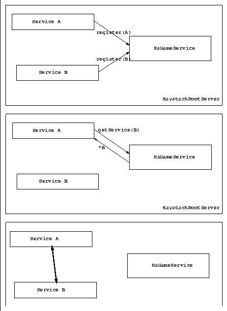

For those with an understanding of CORBA[31] the internals of the service layer should be fairly straight-forward. The Haystack service model utilizes an architectural framework that borrows a number of important ideas from the OMG specifications for CORBA.
In the Haystack notation, just as in CORBA, services are merely
objects that act as clients, servers, or peers. A service encapsulates
a specific functionality behind a well defined interface. This
functionality can be readily invoked from any other service. A
session can be represented as follows (see
Figure  ):
):

Figure: Abstract inter-service communication model
). In Figure
both use the same HaystackRootServer, but as we shall see,
this isn't necessary. Both services invoke the
register(...) method of the HsNameService (see
Section ), with an abstract version of their name
(represented by the ServiceName class).